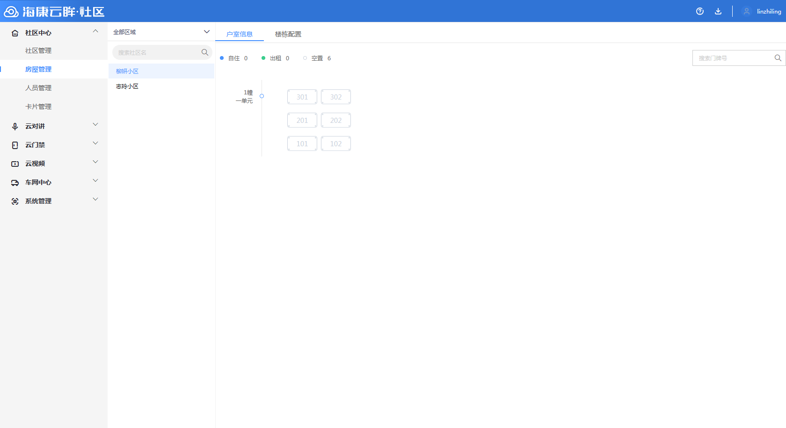
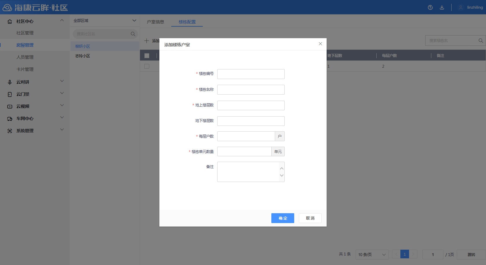

4.2房屋管理
步骤1 进入“房屋管理”，左侧展示小区列表，右侧展示社区下的楼栋、单元和户室信息。

说明
1.户室页签下，展示所有自住、出租和空闲的房屋。
2.鼠标移至并停留在某一户室时，会显示当前户室下居住的人员信息。
3.在右侧搜索框内输入门牌号，能够搜索具体的户室。
步骤2 点击“楼栋配置”进入楼栋配置页签，点击“添加”，输入楼栋单元信息并保存配置。

说明
1.输入楼栋数据后会自动批量生成户室。
2.点击已添加的楼栋，会弹出楼栋信息，可进行编辑。
3.已经录入住户的楼栋，不允许再次编辑，请删除住户之后再次编辑或删除。